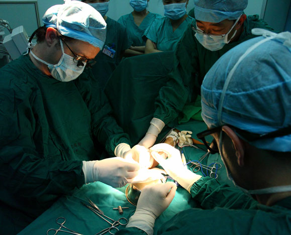
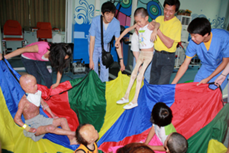

International Clinical Training

At the heart of HandReach's mission lies a commitment to transforming institutions through developing the expertise of the people who make up those institutions. As such, HandReach facilitates international surgical, rehabilitative, and psychosocial training clinics and sponsors joint conferences that allow for the sharing of best practices among institutions. HandReach brings together research and practice partnerships with the aim of enhancing the clinical expertise of all care providers involved in pediatric trauma rehabilitation.
Our areas of clinical focus include:
Reconstructive surgery
Prosthetics
Physical Therapy
Occupational Therapy
Music Therapy
Psychosocial Therapy
Reconstructive Surgical Clinics
Each winter, HandReach strives to assemble a small team of clinicians with expertise in reconstructive surgery to travel abroad for a week-long reconstructive clinic to offer surgeries and physical therapy plans for pediatric burn survivors with severe scarring or contracture. Our clinic is currently hosted by the China General Air Force Hospital in Beijing, and we hope to facilitate clinics to India, Indonesia, and Africa in the near future.
This past January, HandReach led a team of experts in hand surgery and rehabilitation (two surgeons, three rehabilitation therapists, and one nurse), to lead a week-long Hand Clinic at the China General Air Force Hospital in Beijing. The team offered 85 surgical procedures and dozens of hours of individualized hand therapy for patients at the pediatric burn unit, totaling several hundred thousand US dollars in free care. The team also trained two dozen Chinese hospital staff – surgeons, rehabilitation therapists, and nurses – together with the patients' parents, and left the hospital with numerous articles and procedures on disk for subsequent training. If you are a clinician interested in joining us this winter, please contact the Program Coordinator at brecken@handreach.org.
Rehabilitative Camps/Clinics
Every summer, HandReach sponsors a team of professionals specializing in the psychosocial healing of pediatric trauma survivors. This team is supported by a multicultural team of specially-trained young adults (the HandReach Beat Brigade) to offer a summer camp experience for children healing from burn injuries or amputations. The camp has a dual purpose—to work with child trauma survivors directly, and to provide training and support for adults (professional clinicians, care providers, parents, and volunteers) who work with trauma-injured children on a regular basis.
In the summer of 2010, HandReach took a twenty-person team physical and occupational therapists, psychosocial specialists, musicians, and youth Beat Brigade members – to two cities in China (Changsha and Beijing) to lead camps for burn-injured children and to serve as training models in psychosocial care for clinical pediatric burn staff from around China. Working with several dozen severely-injured children in the two cities, HandReach's team provided a host of therapeutic activities and hands-on clinical training ranging from splint-making to scar management to fostering physical and psychosocial healing goals through exercise, play, and music therapy. The team also donated several thousand dollars' worth of equipment, instruments, and supplies to both hospitals.
Currently, the main goal for our Psychosocial Camp/Conferences is to establish the base infrastructure for a Pediatric Trauma Survivor Society in Mainland China. This network will be supported by skilled clinicians from China and abroad who can share state-of-the-art resources for children growing up with trauma scars and amputations, and the adults who care for them. We seek to develop a small in-house prosthetics unit, the first of its kind in China, at the China General Air Force Hospital in Beijing, which will be supported over the long term by Co-op students from medical colleges in Boston. If you are a clinician interested in joining us this summer, please send your CV to our Program Coordinator at brecken@handreach.org
Co-op Program
In January 2010, HandReach inaugurated its co-op partnership with the Bouve College of Health Sciences at Northeastern University by establishing a full clinical co-op training rotation for nursing student Kenneth Wong, who worked at the China General Air Force Hospital for four months, assisting in nursing, physical therapy, and surgery. Wong's co-op serves as the first of many exciting international training opportunities HandReach is working to provide.
If you are a student training in health science and would like to participate in an international co-op program with HandReach, please contact the Program Coordinator at brecken@handreach.org